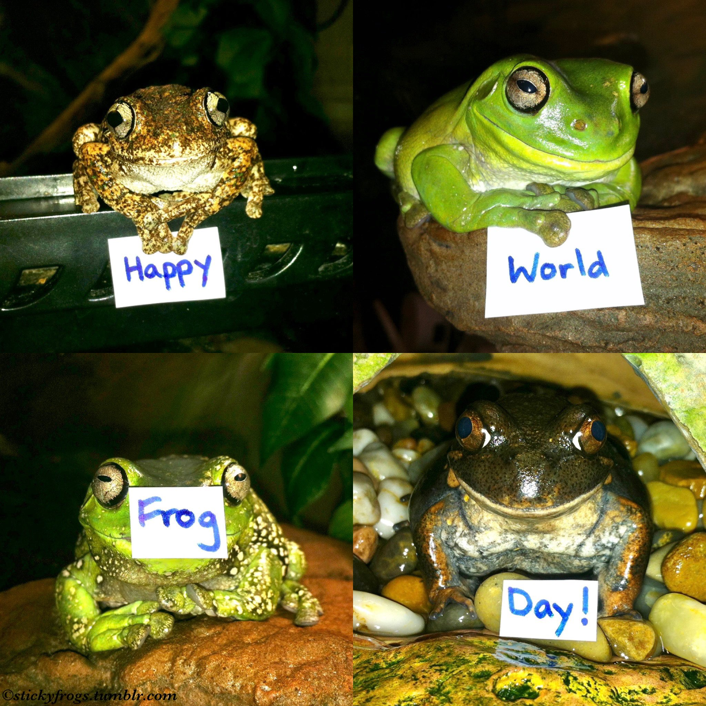

Il 20 marzo è la Giornata mondiale delle rane, istituita nel 2009 per aumentare la consapevolezza sulla difficile situazione delle specie di rane minacciate in tutto il mondo.

Nell'antico Egitto e in Mesopotamia, le rane simboleggiavano la fertilità, mentre nell'antichità classica, i Greci e i Romani associavano le rane alla fertilità, all'armonia e alla licenziosità.
Nella cultura tradizionale cinese, le rane rappresentano lo yin lunare e lo spirito della rana Ch'ing-Wa Sheng è associato alla guarigione e alla buona fortuna negli affari, sebbene una rana in un pozzo sia il simbolo di una persona priva di comprensione e visione.
Le rane vengono mangiate, soprattutto in Francia. Un piatto è noto come cuisses de grenouille, cosce di rana, e sebbene non sia particolarmente comune, è considerato indicativo della cucina francese. Da ciò, "rana" si è sviluppato anche in un termine dispregiativo comune per i francesi in inglese.
Barzelletta sulle rane
Clicca sul tasto per generare una barzelletta!
Le rane nella letteratura
"Le Rane" di Aristofane
"Le Rane" è una celebre commedia greca scritta da Aristofane nel 405 a.C. Quest'opera teatrale è una satira intelligente e irriverente della politica ateniese e delle arti dell'epoca. La trama ruota attorno a Dioniso, dio del teatro, che decide di scendere negli inferi per riportare il grande drammaturgo Euripide in vita. Durante il viaggio, Dioniso incontra le Rane, creature mitologiche che custodiscono l'aldilà. La commedia affronta temi profondi come la critica artistica, la moralità, la democrazia e l'arte teatrale. "Le Rane" di Aristofane è una pungente critica sociale con un tocco di umorismo, che continua a ispirare dibattiti e discussioni sulla cultura e la politica del suo tempo.
"The Frog" di Hillaire Belloc
"The Frog" di Hilaire Belloc è stata scritta nel 1896. Hilaire Belloc era un prolifico scrittore inglese noto per le sue opere umoristiche, le poesie e i saggi. La sua poesia "The Frog" è un esempio del suo stile umoristico e creativo.
Be kind and tender to the Frog,
And do not call him names,
As ‘Slimy skin,’ or ‘Polly-wog,’
Or likewise ‘Ugly James,’
Or ‘Gape-a-grin,’ or ‘Toad-gone-wrong,’
Or ‘Billy Bandy-knees’:
The Frog is justly sensitive
To epithets like these.
No animal will more repay
A treatment kind and fair;
At least so lonely people say
Who keep a frog (and, by the way,
They are extremely rare).
"The Frog Prince" dei Fratelli Grimm
"The Frog Prince," noto anche come "Il principe ranocchio," è una fiaba popolare dei Fratelli Grimm, Jakob e Wilhelm. La storia racconta di una giovane principessa che, dopo aver perso una palla d'oro in uno stagno, fa un patto con una rana che la aiuterà a recuperarla in cambio di amicizia. Quando la principessa rompe il patto, baciando la rana, questa si trasforma in un affascinante principe. La fiaba esplora temi di promesse mantenute, il valore dell'amicizia e l'importanza di guardare oltre le apparenze esterne.
La storia è stata pubblicata per la prima volta dai Fratelli Grimm nella loro raccolta di fiabe intitolata "Kinder- und Hausmärchen" (Fiabe dei bambini e del focolare) nel 1812. È diventata una delle fiabe più amate e conosciute al mondo. La versione dei Fratelli Grimm è spesso la più riferita, ma la storia ha avuto numerose varianti e adattamenti nel corso dei secoli. Uno dei più famosi è l'adattamento della Disney del 2009 che ambienta la storia nella New Orleans del 1920.
Le rane nell'animazione
Aogaeru - La città incantata
Un personaggio minore nel film. Questo spirito rana sorveglia il ponte che Haku e Chihiro devono attraversare quando Chihiro arriva per la prima volta in questo mondo degli spiriti e deve incontrare Yubaba.
Jason Funderberker - Over the Garden Wall
Jason Funderberker (alias Kitty, Wert, Wert Jr, George Washington, Mr. President, Benjamin Franklin, Dr. Cucumber, Greg Jr, Skipper e Ronald) è la rana domestica di Greg in Over The Garden Wall. Greg rinomina continuamente la rana per tutta la serie, prima di stabilirsi su Jason Funderberker nell'episodio finale.
Amphibia
"Amphibia" è una serie animata Disney che segue le avventure di Anne Boonchuy, una ragazza che si trova in un mondo di anfibi antropomorfi. La storia è una miscela di avventura, amicizia e crescita personale. La maggior parte dei personaggi sono rane o rospi, tra cui uno dei protagonisti, Spring Plantar. Una rana antropomorfa maschio rosa di 10 anni che indossa occhiali da aviatore verdi, una giacca aperta e pantaloncini neri opachi. Serve come guida, amico e fratello surrogato per la protagonista Anne Boonchuy dopo che è rimasta intrappolata ad Amphibia. È una rana energica che ha un'affinità con il violino e usa una fionda come arma.
Naruto
Le rane sono un tema ricorrente nella serie anime e manga "Naruto" di Masashi Kishimoto. Questi anfibi appaiono principalmente attraverso il personaggio di Jiraiya, uno dei tre leggendari ninja Sannin e maestro di Naruto. Jiraiya è noto come il "Ninja Rana" o il "Maestro delle Rane" a causa della sua affiliazione con le Rane Giganti. Le Rane Giganti sono creature mistiche e hanno un ruolo importante nella storia di Naruto.